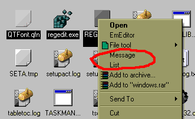

И так, элемент Context предоставляет возможность написать некий "плагин" для Windows Explorer, добавляющий свои пункты меню так же, как это делает например программа WinRAR. Это дает вам возможность производить некоторые операции как с именами файлов, так и с ними самими. В принципе основное назначение данной возможности программы HiAsm можно понять, ознакомившись с примером Context. Чтобы "запустить" плагин из этого примера проделайте следующие шаги:
-
Первым делом вам необходимо скомпилировать проект, нажав
кнопку
на панели инструментов. В той папке, откуда вы открыли пример(в нашем случае это \Example\System) HiAsm создаст 4 файла: COM.dll и ex_COM.dll - эти 2 библиотеки и есть наш плагин, install_COM.bat - скрипт для инсталяции плагина, uninstall_COM.bat - скрипт для деинсталяции плагина.
- Запустите файл install_COM.bat, который зарегистрирует плагин в реестре, и нажмите на единственную кнопку появившегося сообщения об успешной инсталяции.
-
Если вы все сделали правильно, то можете открыть какую-нибудь папку и нажать
правой кнопкой мышки на любом файле в ней. Вы должны будете наблюдать что то
вроде этого:

Как видно из рисунка, в контекстном меню появились два новых пунтка, которые мы
описали в приложение.